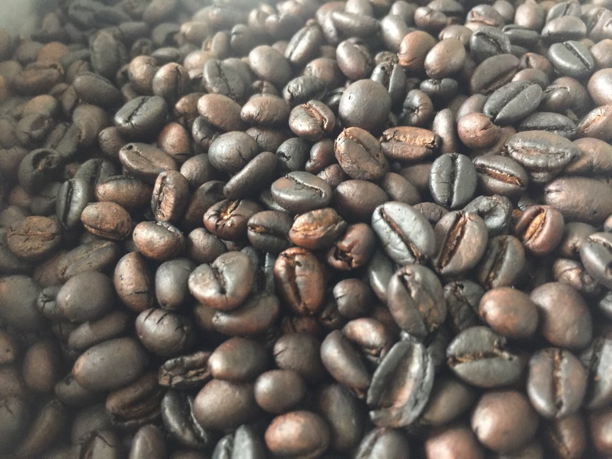
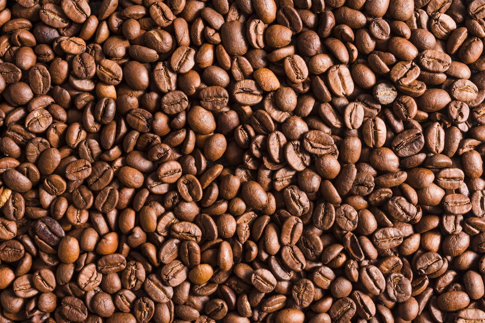

Robusta

It is made from the Coffea canephora plant which is known for its
strong and robust flavor. It is known for its bold and earthy taste,
with a smoky finish.
Arabica

It is made from the Coffea arabica plant which is known for its
milder and sweeter flavor. It is known for its complex and nuanced
taste, with notes of chocolate and caramel.
Baraco

It is a popular choice for those who prefer a strong coffee and is
often used for espresso and other strong coffee drinks. Kapeng
Barako is considered a specialty coffee in the Philippines and is a
popular export item.